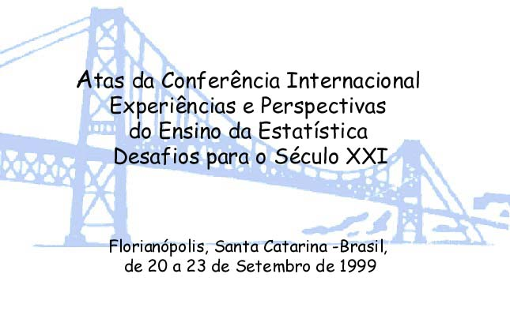
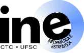

 Clique na figura para entrar

Realização

Universidade Federal de Santa Catarina
Departamento de Informática e Estatística
Programme de Recherche et d'Enseignement en Statistique Appliqueé
International Association for Statistical Education
Apoio Financeiro: União Européia